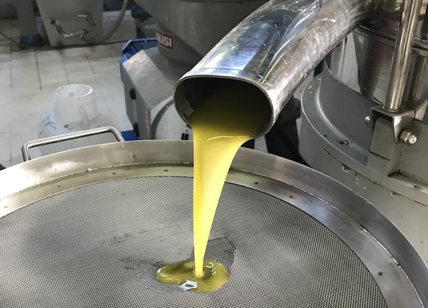
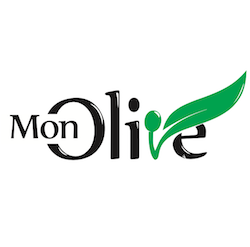
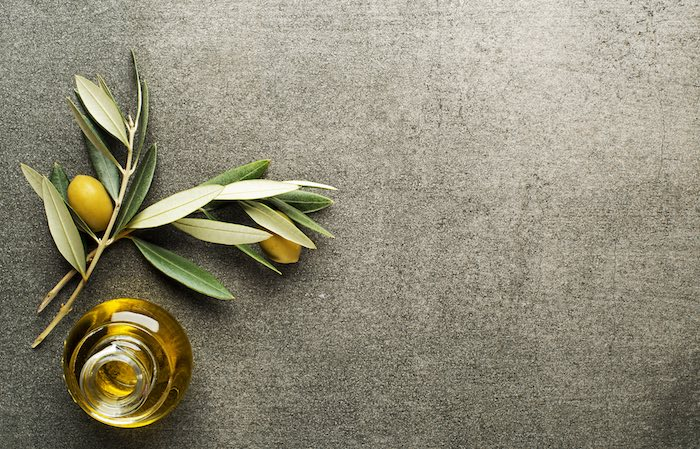

MonOlive
MonOlive, Ege Bölgesi çıkışlı bir zeytinyağını yüksek polifenol çizgisinde sunar. Geldiği yerin rüzgarını, toprağını ve karakterini şişede hissettirir.
Şişe ve Ürün Görselleri



MonOlive Hakkında
MonOlive daha seçici sofralara yakışacak karakterli bir çizgi sunar. Ege Bölgesi çıkışlı bu yağı yüksek polifenol çizgisinde hazırlar; şişe sofraya ulaştığında yalnızca lezzet değil güven de taşır.
Ege Bölgesi yalnızca bir adres değildir; rüzgarı, taş evleri, zeytin ağaçlarının gölgesi ve uzun yaz akşamlarıyla yaşayan bir hafızadır. Bu yüzden MonOlive şişelerinde yalnızca tat değil, geldiği yerin ruhu da hissedilir.
Ege Bölgesi dokusu, bu yağın karakterini belirleyen en önemli parçalardan biridir. Toprağın kokusu, rüzgarın serinliği ve ağaçların mevsim boyunca geçirdiği değişim, damakta bırakılan izi daha derin ve daha hatırlanır kılar.
MonOlive tarafında lezzet anlatılırken önce damakta bıraktığı iz öne çıkar. Bu yağda daha canlı, yeşil ve enerjik bir açılış öne çıkar. İyi zeytinyağı anlayışında, şişe açıldığında temiz koku vermesi ve sofrada nerede duracağını hemen belli etmesi beklenir. Bu nedenle kahvaltıda ekmeğe gezdirdiğinizde, salatada son dokunuşu yaptığınızda ya da zeytinyağlı bir yemekte temel lezzeti kurduğunuzda farklı biçimde karşılık verir.
Öne çıkan taraf yalnızca lezzet iddiası değildir; neyin neden yapıldığının açık tutulması ve şişede görülen dilin ürünün içinde de korunmasıdır.
Bu yağı ilk kez deneyecekseniz işe hangi sofrada kullanacağınızı düşünerek başlamak gerekir. Teneke seçenekleri bu yüzden önemli. İlk denemede küçük hacim güven verir; beğendiğiniz çizgiyi bulduğunuzda daha büyük ambalajlar evdeki düzenli kullanım için çok daha doğru olur. Yoğun aromayı kahvaltıda ve çiğ dokunuşlarda arıyorsanız daha karakterli şişelere, gün boyu mutfakta rahat kullanmak istiyorsanız daha yumuşak akış veren serilere yönelmeniz daha doğru olur.
MonOlive tarafında bu şişenin değeri, geldiği yerin hikayesini sofrada hissedilir kılabilmesinde yatar. MonOlive alındığında yalnızca bir yağ değil; emeği belli olan, nereden geldiği hissedilen ve hangi sofrada parlayacağını bilen bir seçim gelir. Şişe açıldığında beklenti ne olursa olsun amaç aynıdır: kokusuyla, akışıyla ve damakta kalan iziyle bu yağı tekrar hatırlatmak.
İyi zeytinyağı anlayışında yalnızca rengi güzel görünen bir yağ aranmaz; kokusu açıldığında canlı olmalı, damakta temiz akmalı ve sofradaki diğer tatların üzerine çıkmadan kendini belli etmelidir.
Şişeyi açtığınızda önce gelen koku, sonra dilde bıraktığı akış ve en son boğazdaki kısa iz iyi bir şişede en çok dikkat edilen ayrıntılardır. Bu üçü bir araya geldiğinde yağ kendini gerçekten anlatır.
İster kahvaltı sofrasında ekmeğe gezdirin ister salatada son dokunuş olarak kullanın, iyi bir şişe her kullanımda aynı güveni vermelidir. Güven duygusunu kalıcı kılan şey tam olarak bu tutarlılıktır.
Sofrada fark edilen iyi yağ, yalnızca parlak bir etiketle değil, ikinci lokmada da aynı temizliği sürdürebilmesiyle anlaşılır. Aranan etki tam olarak budur.
İyi zeytinyağı anlayışında yalnızca rengi güzel görünen bir yağ aranmaz; kokusu açıldığında canlı olmalı, damakta temiz akmalı ve sofradaki diğer tatların üzerine çıkmadan kendini belli etmelidir.
Şişeyi açtığınızda önce gelen koku, sonra dilde bıraktığı akış ve en son boğazdaki kısa iz iyi bir şişede en çok dikkat edilen ayrıntılardır. Bu üçü bir araya geldiğinde yağ kendini gerçekten anlatır.
İster kahvaltı sofrasında ekmeğe gezdirin ister salatada son dokunuş olarak kullanın, iyi bir şişe her kullanımda aynı güveni vermelidir. Güven duygusunu kalıcı kılan şey tam olarak bu tutarlılıktır.
Sofrada fark edilen iyi yağ, yalnızca parlak bir etiketle değil, ikinci lokmada da aynı temizliği sürdürebilmesiyle anlaşılır. Aranan etki tam olarak budur.
İyi zeytinyağı anlayışında yalnızca rengi güzel görünen bir yağ aranmaz; kokusu açıldığında canlı olmalı, damakta temiz akmalı ve sofradaki diğer tatların üzerine çıkmadan kendini belli etmelidir.